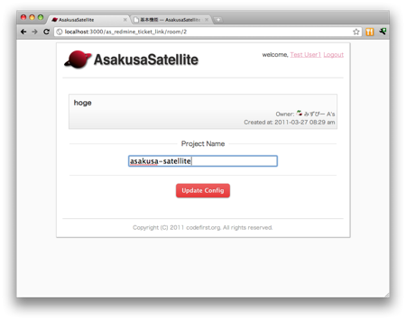

#数字 を Redmine のチケットへのリンクに変換します。 API アクセスキーが設定されている場合は、チケットの名前を自動で付加します。 また、メッセージの内容を Redmine に投稿するためのリンクを各メッセージに付加します。
config/filter.yml に以下を記述します
- name: redmine_ticket_link
roots: "Redmine のルート URL"
api_key: "Redmine の個人設定 > API アクセスキー"
また部屋の設定画面からチケットを作成するプロジェクトを指定できます。
ソースコードをハイライトします。 記法は
例えば,
ruby::
puts "Hello World!"
と記述することで、２行目がハイライトして表示されます。
また、Graphviz の dot 記法もサポートしています。
graphviz::
digraph{A->B->C->A}
のように、 graphviz:: に続けて dot 記法を記述することで 簡単なグラフを描画することができます。
AsakusaSatellite は Twitter の OAuth を用いて認証を行いますが、 本プラグインを有効にすると、ローカルのユーザリストを用いた認証に切り替えます。
<AS_ROOT>/config/settings.yml に以下を記述します。 本設定を行うことにより、Twitter の OAuth による認証は無効になり、 ローカル認証が有効になります。
login_link: http://hostname:3000/localauth/login
次に、ユーザリストにユーザを追加します。 ユーザリストは以下のファイルです。
<AS_ROOT>/vendor/plugins/as_localauth_plugin/config/users.yml
内容は以下の形式です。
testuser1:
screen_name: Test User1
password: b444ac06613fc8d63795be9ad0beaf55011936ac
profile_image_url: http://example.com/test1_user.png
ユーザリストは YAML 形式で記述します。
testuser1 の部分 にはユーザ ID を記述します。
screen_name はユーザの表示名を記述します。
password にはパスワードの SHA-1 ハッシュを記述します。 SHA-1 ハッシュの生成は、以下のコマンドで行うことができます。
$ ruby <AS_ROOT>/vendor/plugins/as_localauth_plugin/script/gen_sha1 <PASSWORD>
profile_image_url にはユーザのアイコンの URL を記述します。 データ URI スキームも指定することもできます。 testuser2 の例を参考にしてください。